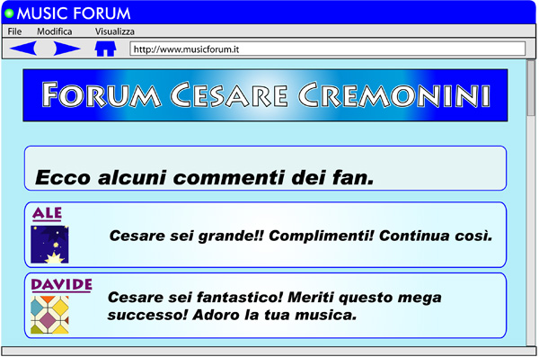
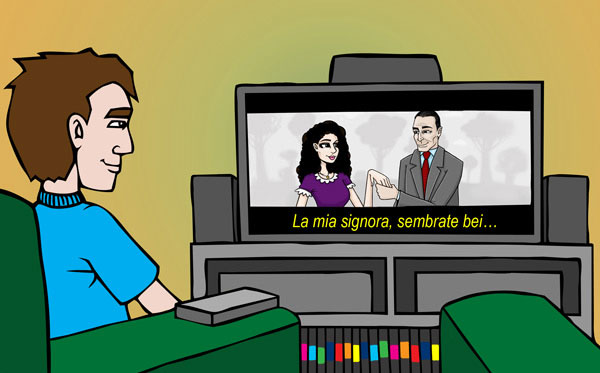

Let’s look at the opinions di alcuni teenager italiani about la musica found on an Italian Internet Forum site.
[Sergio:] La musica è vita! |
|
Can you recognise any Italian words that are similar to English? List them in the table below:
Italiano |
Inglese |
Italiano |
Inglese |
|
|
|
|
|
|
|
|
|
|
|
|
|
|
|
|
|
|
|
|
|
|
|
|
|
Match the following opinions about la musica with the person who expresses this view by dragging le persone and dropping them in front of their opinion.
 |
Not sure about the content? |
Which expressions would you use to express your view of la musica? You can mix and match! What you may want to say can be a bit of one section and a bit of another. Be adventurous!
Join in the forum below to express your opinion about music. Prova!
| Forum – La musica |
| Scrivi il tuo nome |
Don’t forget to print this activity out for your future reference.
For this activity, go to www.yahoo.it and select Musica to begin your search. Then answer the questions in worksheet A3 extra.
This activity is purely for your enjoyment! You will be able to visit the websites of two radio stations for teenagers – Radiosabbia and Radiomontecarlo.
Radiosabbia began in Riccione, a seaside town very close to Rimini in 1976.
In the previous section you looked at the Rimini beach scene. Ti ricordi?
È la radio da mare ... ecco perché il nome RADIOSABBIA! www.radiosabbia.itRadiomontecarlo (RMC) è la radio del sole. It is transmitted from Monte Carlo and plays a lot of English music www.radiomontecarlo.net
Select ‘Ascolta RMC‘ on this website and you can tune in to Radio Italia all over the world.
Buon ascolto!
Cesare Cremonini è un cantante italiano molto in voga e tra i più ricercati su Internet.
Sul sito di Cesare, i fan possono trovare i testi delle canzoni, video, appuntamenti televisivi, concerti, forum e chat.
Cesare era il leader e la voce di Luna Pop, una band da Bologna. Il gruppo ha avuto molto successo in Italia. Purtroppo la band non è più insieme. Cesare adesso canta da solo.
Vuoi conoscere Cesare Cremonini?
Check out his website www.cesarecremonini.it, if you click on 'biografie' you should find out some personal details. Record your findings in the same worksheet above.
Go to www.yahoo.it.
Click on ‘Cinema‘.
Click on ‘Adesso al cinema‘ to see the films that are presently showing.
Click on to the titles to access information on each film. If you select ‘Recensioni‘, it will give details about the film as well.
Select ‘Trailer‘ if you would like to view the trailer. This will allow you to experience what it is like to watch a dubbed movie.
Make a list of some of the films that are being shown. You may wish to focus on the films that you are familiar with or ones in which you recognise the cast.
| The titles of English films are often translated into Italian. They do not, however, always retain the same meaning! |
Write brief details of the films in the same worksheet above.
Vuoi vedere un film italiano?
It may be difficult to go to Italy to see an Italian film! The good news is that this is not necessary!
| Lo sai che
You can access Italian films in Australia in a variety of ways. Italian languages week Italian film festival Some video shores have a collection of the more successful Italian films. SBS has Italian films every now and again. If you have cable TV, you can view numerous Italian films. Watching a film in Italian helps to develop your listening and comprehension skills. It is a relaxing and entertaining way to develop language skills. The films have English subtitles so it’s possible to read them and at the same time listen to the dialogue. Films also provide a subtle insight into the Italian culture. If you are able to view an Italian film, go to next activity: Un film italiano for a film activity. |
View an appropriate Italian film.
Buona visione!
Having seen the film, the next step is to write a blog in Italian describing your reaction to the film. You may be able to encourage or discourage other teenagers from going to see the film!
Use the following guidelines to help you with the content:
| You may also wish to explore the Italian cinema website by going to www.yahoo.it and selecting ‘cinema‘ to help you express your ideas. |
Now that you have a basic idea of what La Notte Bianca is about, you can do a more refined search with a web quest.
Search the Internet to find answers to the four questions at the end of the same worksheet above.